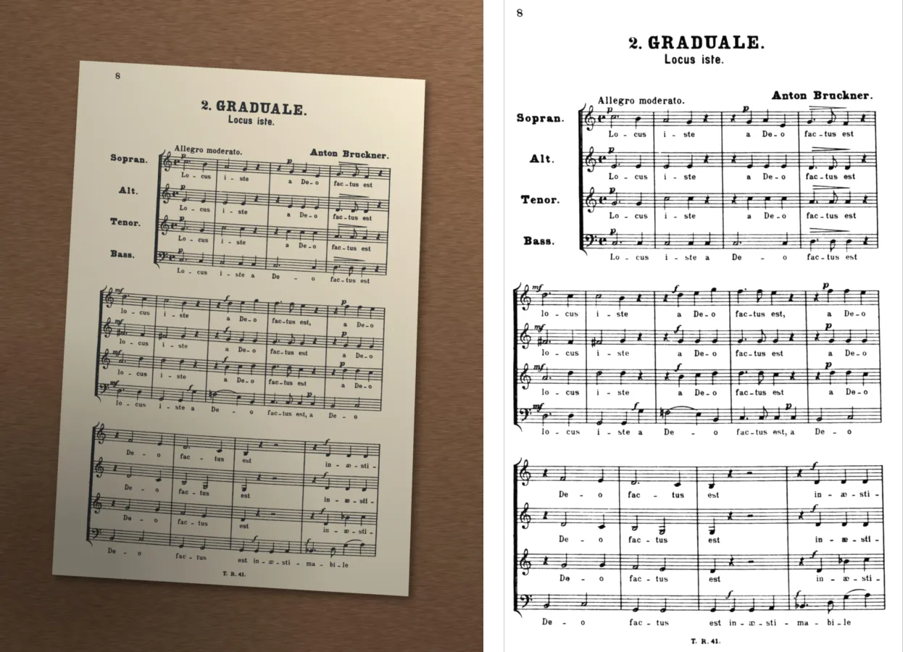

Pour vous : trois étapes
-
Numérisez la partition
Un PDF, ou une photo par page, dans l’ordre : bien à plat, nette, sans ombre, la page entière. Plus l’image est propre, plus la transcription sera juste. Une photo imparfaite reste utilisable : les pages sont redressées, recadrées et nettoyées.

Une photo prise de biais et dans l’ombre, et la page que Pupitre Ouvert en montre. (Photo simulée à partir d’une édition du domaine public.) -
Confiez-la à une IA, avec cette phrase
Il faut une IA qui sait exécuter du code et lire des images (Claude ou ChatGPT, par exemple, dans leurs modes qui exécutent du code). Joignez vos fichiers et donnez-lui :
Lis la page https://bolevo.github.io/pupitre-ouvert/creer.html et suis sa méthode pour faire, à partir de la partition que je te joins, une archive .zip pour Pupitre Ouvert.
Vous pouvez demander les voix d’abord, et le piano ensuite ; ou seulement les pages dont vous avez besoin. Une archive plus complète remplacera la première.
-
Ajoutez l’archive, et vérifiez-la
Dans Pupitre Ouvert : liste des œuvres, en haut à gauche, puis Ajouter une partition (.zip)… L’œuvre reste ensuite dans l’app.
Puis écoutez, partition en main. Une IA se trompe : une note, une durée, une syllabe. Notez le mouvement, la mesure et la voix, et demandez-lui de corriger ; la nouvelle archive remplace l’ancienne.
- Vos fichiers restent les vôtres. L’archive n’est envoyée nulle part par Pupitre Ouvert : elle est gardée dans votre navigateur.
- Droits d’auteur. L’archive contient les images de votre partition : elle est faite pour votre usage personnel. Ne la diffusez pas si l’édition est protégée.
- Vous savez programmer ? Tout est là : le dépôt, les mêmes outils, la même méthode.
Pour l’IA : la méthode
Ce qui suit s’adresse à l’IA qui fabrique l’archive. C’est le document
docs/CREER.md du dépôt ; les outils
sont dans le kit.